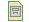

Getting started
Getting started
All links and citations are stored alongside the page, so if you accidentally delete a link you can go into the archive to find the URL.
You can turn archiving off for any page that you either own or have "modify" access to, but it's recommended that you leave it on. If archiving is turned off for a page that was previously archived, the old archive remains, but is no longer updated when the most recent page is edited.
http://webweb.server/path_to_webweb?PageName
This will take you directly to the page you want to access. If this page doesn't exist, you'll get a blank page, which you may then edit as you desire.